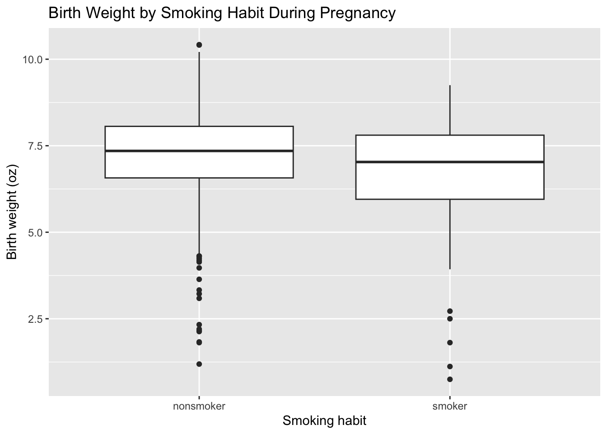
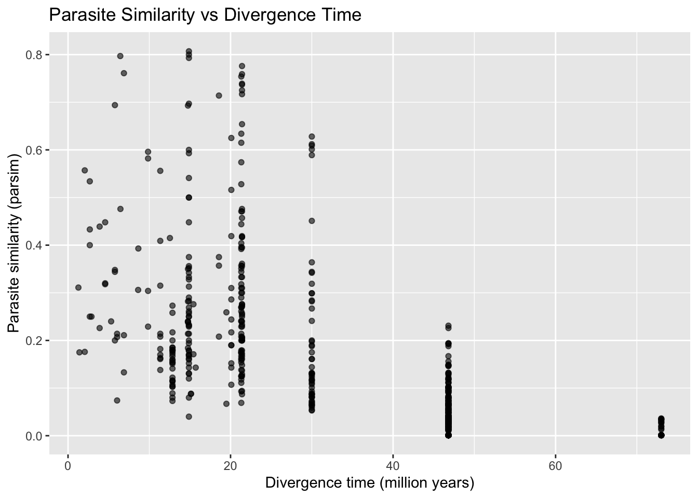
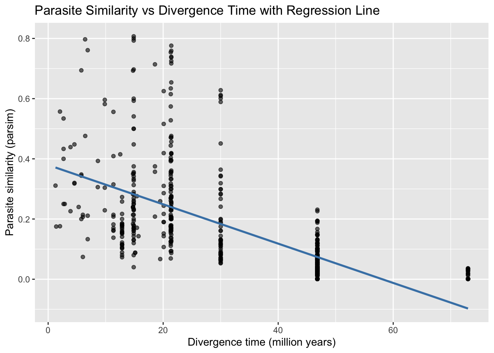
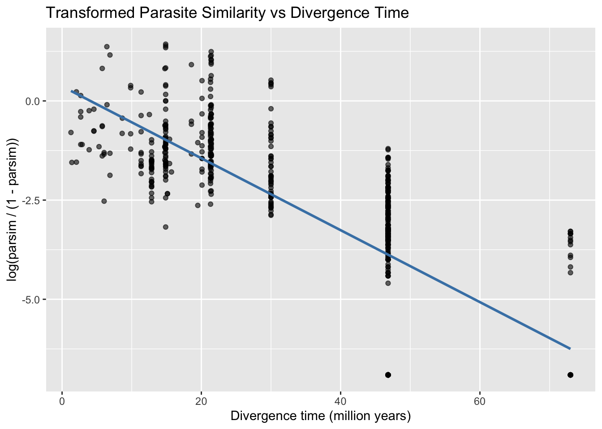
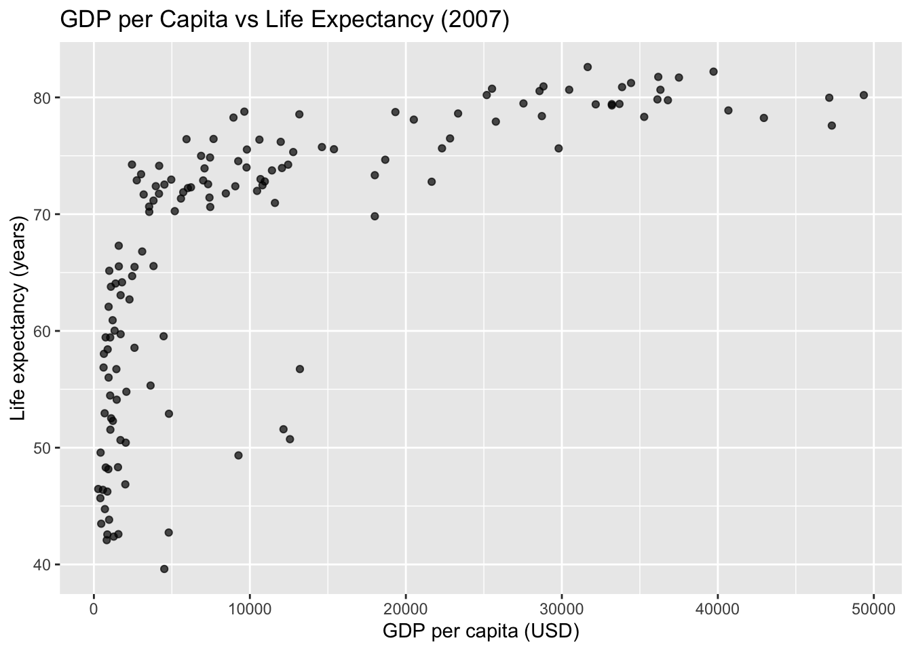
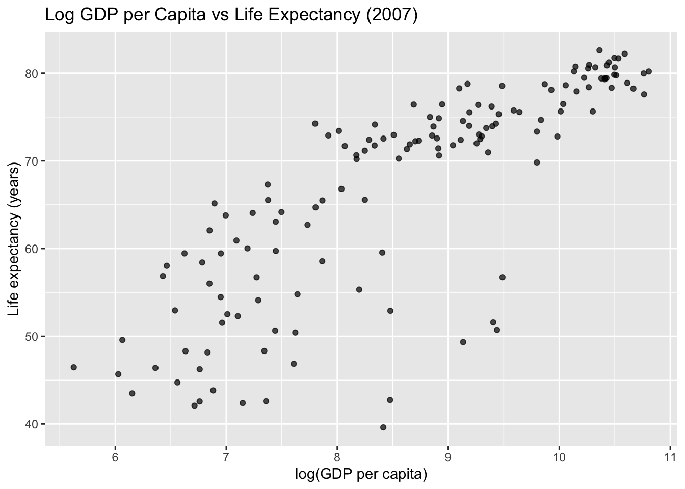
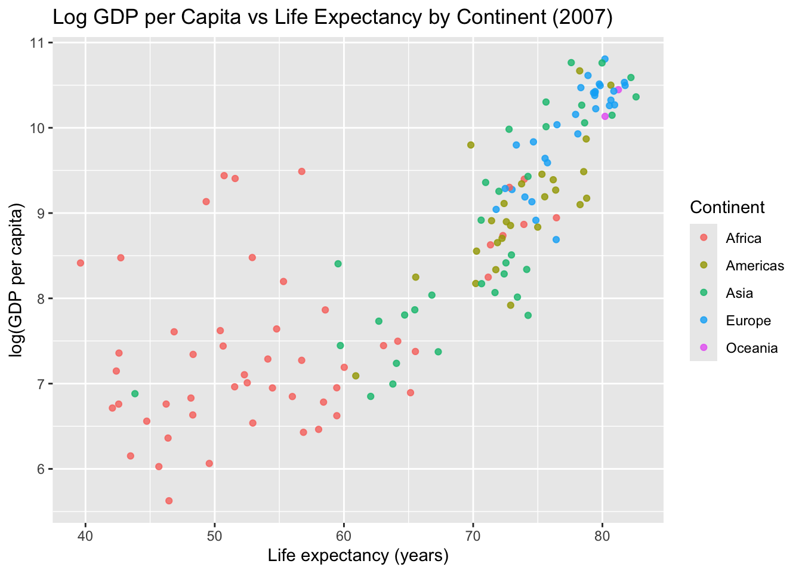

In this lab you’ll start your practice of statistical modelling. You’ll fit models, interpret model output, and make decisions about your data and research question based on the model results.
Guidelines
Your plots should include an informative title, axes should be labeled, and careful consideration should be given to aesthetic choices.
In addition, the code should all the code should be be able to be read (not run off the page) when you render to PDF. Make sure that is the case, and add line breaks where the code is running off the page.
library(tidyverse)
── Attaching core tidyverse packages ──────────────────────── tidyverse 2.0.0 ──
✔ dplyr 1.1.4 ✔ readr 2.1.6
✔ forcats 1.0.1 ✔ stringr 1.6.0
✔ ggplot2 4.0.1 ✔ tibble 3.3.1
✔ lubridate 1.9.4 ✔ tidyr 1.3.2
✔ purrr 1.2.1
── Conflicts ────────────────────────────────────────── tidyverse_conflicts() ──
✖ dplyr::filter() masks stats::filter()
✖ dplyr::lag() masks stats::lag()
ℹ Use the conflicted package (<http://conflicted.r-lib.org/>) to force all conflicts to become errors
Render your document. If your code is running off the page for a given question such that we can’t see your entire code, we will not evaluate any of the code for that question. The question will automatically receive a 0. This is something you can and should verify before you turn in your work.
You should have at least 3 commits with meaningful commit messages by the end of the assignment.
Additionally, if you’re using functions that are not introduced in the course materials, you must cite your sources.
Important
Failure to cite outside resources used, including Large Language Models like Chat GPT, is a violation of the Duke Community Standard and will be treated as such.
Part 1 - Smoking during pregnancy
Question 1
We are interested in the impact of smoking during pregnancy. Since it is not possible to run a randomized controlled experiment to investigate this impact, we will instead use a data set has been of interest to medical researchers who are studying the relation between habits and practices of expectant mothers and the birth of their children. This is a random sample of 1,000 cases from a data set released in 2014 by the state of North Carolina. The data set is called births14, and it is included in the openintro package you loaded at the beginning of the assignment.
Create a version of the births14 data set dropping observations where there are NAs for habit. You can call this version births14_habitgiven.
births14
# A tibble: 1,000 × 13
fage mage mature weeks premie visits gained weight lowbirthweight sex
<int> <dbl> <chr> <dbl> <chr> <dbl> <dbl> <dbl> <chr> <chr>
1 34 34 younger m… 37 full … 14 28 6.96 not low male
2 36 31 younger m… 41 full … 12 41 8.86 not low fema…
3 37 36 mature mom 37 full … 10 28 7.51 not low fema…
4 NA 16 younger m… 38 full … NA 29 6.19 not low male
5 32 31 younger m… 36 premie 12 48 6.75 not low fema…
6 32 26 younger m… 39 full … 14 45 6.69 not low fema…
7 37 36 mature mom 36 premie 10 20 6.13 not low fema…
8 29 24 younger m… 40 full … 13 65 6.74 not low male
9 30 32 younger m… 39 full … 15 25 8.94 not low fema…
10 29 26 younger m… 39 full … 11 22 9.12 not low male
# ℹ 990 more rows
# ℹ 3 more variables: habit <chr>, marital <chr>, whitemom <chr>
births14_habitgiven <- births14 |>drop_na(habit)
Plotting the data is a useful first step because it helps us quickly visualize trends, identify strong associations, and develop research questions. Create an appropriate plot displaying the relationship between weight and habit. In 2-3 sentences, discuss the relationships observed.
ggplot(births14_habitgiven, aes(x = habit, y = weight)) +geom_boxplot() +labs(title ="Birth Weight by Smoking Habit During Pregnancy",x ="Smoking habit",y ="Birth weight (oz)" )

Comment: The boxplot shows that the median birth weight is higher for non-smokers than for smokers. The interquartile range is also wider for smokers than for non-smokers.
Now, fit a linear model that predicts weight from habit. Provide the tidy summary output below.
q1_habit_model <-lm(weight ~ habit, data = births14_habitgiven)tidy(q1_habit_model)
Write the estimated least squares regression line below using proper notation.
Tip
If you need to type an equation using proper notation, type your answers in-between $$ and $$. You may use \hat{example} to put a hat on a character.
\[
\hat{weight}=7.269-0.592 (smoker)
\]
Question 2
Another researcher is interested in assessing the relationship between babies’ weights and mothers’ ages. Fit another linear model to investigate this relationship. Provide the summary output below.
q2_age_model <-lm(weight ~ mage, data = births14)tidy(q2_age_model)
In 2-3 sentences, explain how the regression line to model these data is fit, i.e., based on what criteria R determines the regression line.
It is based on the least squares method meaning that R is calculating the line that minimizes the sum of the squared distances between the points and the line. The distance between the point and the line is the residual.
Interpret the intercept in the context of the data and the research question. Is the intercept meaningful in this context? Why or why not?
The intercept is the weight of a baby when the mother's age is 0. This is not meaningful in this context because it is not possible for a mother to be 0 years old.
Interpret the slope in the context of the data and the research question.
The slope is the expected change in weight of a baby for each year of the mother's age. In this case the suggested positiver elationship is that the weight of a baby increases by 0.014 ounces for each additional year of the mother's age.
Part 2 - Parasites
Parasites can cause infectious disease – but not all animals are affected by the same parasites. Some parasites are present in a multitude of species and others are confined to a single host. It is hypothesized that closely related hosts are more likely to share the same parasites. More specifically, it is thought that closely related hosts will live in similar environments and have similar genetic makeup that coincides with optimal conditions for the same parasite to flourish.
In this part of the lab, we will see how much evolutionary history predicts parasite similarity.
The dataset comes from an Ecology Letters paper by Cooper at al. (2012) entitled “Phylogenetic host specificity and understanding parasite sharing in primates” located here. The goal of the paper was to identify the ability of evolutionary history and ecological traits to characterize parasite host specificity.
Each row of the data contains two species, species1 and species2.
Subsequent columns describe metrics that compare the species:
divergence_time: how many (millions) of years ago the two species diverged. i.e. how many million years ago they were the same species.
distance: geodesic distance between species geographic range centroids (in kilometers)
BMdiff: difference in body mass between the two species (in grams)
precdiff: difference in mean annual precipitation across the two species geographic ranges (mm)
parsim: a measure of parasite similarity (proportion of parasites shared between species, ranges from 0 to 1.)
The data are available in parasites.csv in your data folder.
Question 3
Let’s start by reading in the parasites data and examining the relationship between divergence_time and parsim.
Load the data and save the data frame as parasites.
parasites <-read_csv("data/parasites.csv")
Rows: 595 Columns: 7
── Column specification ────────────────────────────────────────────────────────
Delimiter: ","
chr (2): species1, species2
dbl (5): divergence_time, distance, BMdiff, precdiff, parsim
ℹ Use `spec()` to retrieve the full column specification for this data.
ℹ Specify the column types or set `show_col_types = FALSE` to quiet this message.
Based on the goals of the analysis, what is the response variable?
The response variable is `parsim`.
Visualize the relationship between the two variables.
ggplot(parasites, aes(x = divergence_time, y = parsim)) +geom_point(alpha =0.6) +labs(title ="Parasite Similarity vs Divergence Time",x ="Divergence time (million years)",y ="Parasite similarity (parsim)" )

Use the visualization to describe the relationship between the two variables.
The relationship between the two variables is negative. As the divergence time increases, the parasite similarity decreases.
Question 4
Next, model this relationship.
Fit the model and write the estimated regression equation.
q4_model <-lm(parsim ~ divergence_time, data = parasites)tidy(q4_model)
Interpret the slope and the intercept in the context of the data. \[
\hat{parsim}=0.379-0.006 (divergencetime)
\]
The slope is the expected change in parasite similarity for each additional million years of divergence time. In this case the suggested negative relationship is that the parasite similarity decreases by 0.006 for each additional million years of divergence time.
Recreate the visualization from Question 3, this time adding a regression line to the visualization.
ggplot(parasites, aes(x = divergence_time, y = parsim)) +geom_point(alpha =0.6) +geom_smooth(method ="lm", se =FALSE, color ="steelblue") +labs(title ="Parasite Similarity vs Divergence Time with Regression Line",x ="Divergence time (million years)",y ="Parasite similarity (parsim)" )
`geom_smooth()` using formula = 'y ~ x'

What do you notice about the prediction (regression) line that may be strange, particularly for very large divergence times?
The prediction line is strange because it suggests that the parasite similarity is 0 for very large divergence times like >70 million years.
Question 5
Since parsim takes values between 0 and 1, we want to transform this variable so that it can range between (−∞,+∞). This will be better suited for fitting a regression model (and interpreting predicted values!)
Using mutate, create a new variable transformed_parsim that is calculated as log(parsim/(1-parsim)). Add this variable to your data frame.
Then, visualize the relationship between divergence_time and transformed_parsim. Add a regression line to your visualization.
ggplot(parasites, aes(x = divergence_time, y = transformed_parsim)) +geom_point(alpha =0.6) +geom_smooth(method ="lm", se =FALSE, color ="steelblue") +labs(title ="Transformed Parasite Similarity vs Divergence Time",x ="Divergence time (million years)",y ="log(parsim / (1 - parsim))" )
`geom_smooth()` using formula = 'y ~ x'

Write a 1-2 sentence description of what you observe in the visualization. The visualization shows a negative relationship between the divergence time and the transformed parasite similarity. ## Question 6
Which variable is the strongest individual predictor of parasite similarity between species?
To answer this question, begin by fitting a linear regression model to each pair of variables. Do not report the model outputs in a tidy format but save each one as dt_model, dist_model, BM_model, and prec_model, respectively.
divergence_time and transformed_parsim
distance and transformed_parsim
BMdiff and transformed_parsim
precdiff and transformed_parsim
dt_model <-lm(transformed_parsim ~ divergence_time, data = parasites)dist_model <-lm(transformed_parsim ~ distance, data = parasites)BM_model <-lm(transformed_parsim ~ BMdiff, data = parasites)prec_model <-lm(transformed_parsim ~ precdiff, data = parasites)
Report the slopes for each of these models. Use proper notation. \[
\hat{β_{dt}} =-0.09
\]
To answer the question of interest, would it be useful to compare the slopes in each model to choose the variable that is the strongest predictor of parasite similarity? Why or why not? No, it is not useful as all the slopes have a different unit making them incomparable. The bigger absolute slope is not necessarily the strongest predictor. ## Question 7
Now, what if we calculated \(R^2\) to help answer our question? To compare the explanatory power of each individual predictor, we will look at \(R^2\) between the models. \(R^2\) is a measure of how much of the variability in the response variable is explained by the model.
As you may have guessed from the name \(R^2\) can be calculated by squaring the correlation when we have a simple linear regression model. The correlation r takes values -1 to 1, therefore, \(R^2\) takes values 0 to 1. Intuitively, if r=1 or −1, then \(R^2\)=1, indicating the model is a perfect fit for the data. If r≈0 then \(R^2\)≈0, indicating the model is a very bad fit for the data.
You can calculate \(R^2\) using the glance function. For example, you can calculate \(R^2\) for dt_model using the code glance(dt_model)$r.squared.
Calculate and report \(R^2\) for each model fit in the previous exercise.
To answer our question of interest, would it be useful to compare the \(R^2\) in each model to choose the variable that is the strongest predictor of parasite similarity? Why or why not?
Yes, it would be useful to compare the $R^2$ in each model to choose the variable that is the strongest predictor of parasite similarity. In this case the strongest predictor is the divergence time with an $R^2$ of 0.512.
Part 3 - GDP and life expectancy
Gapminder is a “fact tank” that uses publicly available world data to produce data visualizations and teaching resources on global development. We will use an excerpt of their data to explore relationships among world health metrics across countries and regions between the years 1952 and 2007. The data set is called gapminder, from the gapminder package. A table of variables can be found below.
country: The country name
continent: The continent name
year: ranges from 1952 to 2007 in increments of 5 years
lifeExp: life expectancy at birth, in years
pop: population of country
gdpPercap: GDP per capita (US$, inflation-adjusted)
Question 8
Data: For our analysis, we will only be working with data from 2007. Below, filter the data set so only values from the year 2007 are shown. Save this data set as gapminder_07 and use it for the remainder of this exercise and the following.
Visualization: We are interested in learning more about GDP, and we’ll start with exploring the relationship between life expectancy and GDP. Create two visualizations:
Scatter plot of gdpPercap vs. lifeExp.
Scatter plot of gdpPercap_log vs. lifeExp, where gdpPercap_log is a new variable you add to the data set by taking the natural log of gdpPercap.
First describe the relationship between each pair of the variables. Then, comment on which relationship would be better modeled using a linear model, and explain your reasoning.
ggplot(gapminder_07, aes(x = gdpPercap, y = lifeExp)) +geom_point(alpha =0.7) +labs(title ="GDP per Capita vs Life Expectancy (2007)",x ="GDP per capita (USD)",y ="Life expectancy (years)" )

ggplot(gapminder_07, aes(x = gdpPercap_log, y = lifeExp)) +geom_point(alpha =0.7) +labs(title ="Log GDP per Capita vs Life Expectancy (2007)",x ="log(GDP per capita)",y ="Life expectancy (years)" )

Both visualizations show a positive relationship between the log of the GDP per capita and the life expectancy. The second visualization shows a more linear relationship than the first visualization. The first visualization shows a more curved relationship. So, the second visualization (log GDP per capita vs life expectancy) would be better modeled using a linear model.
Model fitting:
Fit a linear model predicting log gross domestic product from life expectancy. Display the tidy summary.
q8_model <-lm(gdpPercap_log ~ lifeExp, data = gapminder_07)tidy(q8_model)
Calculate the R-squared of the model using two methods and confirm that the values match: first method is using glance() and the other method is based on the value of the correlation coefficient between the two variables.
Interpret R-squared in the context of the data and the research question.
The $R^2$ from the glance function is 0.654 and the $R^2$ from the correlation coefficient is 0.654. They match and also suggest that 65.4% of the variability in the log of the GDP per capita can be explained by the life expectancy.
Question 9
Next, we want to examine if the relationship between GDP and life expectancy that we observed in the previous exercise holds across all continents in our data. We’ll continue to work with logged GDP (gdpPercap_log) and data from 2007.
Justification: Create a scatter plot of gdpPercap_log vs. lifeExp, where the points are colored by continent. Do you think the trend between gdpPercap_log and lifeExp is different for different continents? Justify your answer with specific features of the plot.
ggplot(gapminder_07, aes(x = lifeExp, y = gdpPercap_log, color = continent)) +geom_point(alpha =0.8) +labs(title ="Log GDP per Capita vs Life Expectancy by Continent (2007)",x ="Life expectancy (years)",y ="log(GDP per capita)",color ="Continent" )

Overall, the trend between the log of the GDP per capita and the life expectancy is positive for all continents. However, the trend is different for different continents.For instance, Africa has most of points clustered around the bottom left of the plot suggesting lower life expectancy and lower GDP per capita. Europe, Amercas and Oceania has most of the points clustered around the top right of the plot suggesting higher life expectancy and higher GDP per capita. Asia has a more scattered pattern suggesting a more mixed relationship between life expectancy and GDP per capita.
Model fitting and interpretation:
Regardless of your answer in part (a), fit an additive model (main effects) that predicts gdpPercap_log from life expectancy and continent (with Africas as the baseline level). Display a tidy summary of the model output.
Interpret the intercept of the model, making sure that your interpretation is in the units of the original data (not on log scale).
Interpret the slope of the model, making sure that your interpretation is in the units of the original data (not on log scale).
# Also show the result in original GDP per capita units by exponentiating the estimatesq9_additive_model_tidy_original_units <- q9_additive_model_tidy |>mutate(estimate_exp =exp(estimate))q9_additive_model_tidy_original_units
In the original units the intercept is 24.651 meaning that in Africa a life expectancy of 0 years would have a GDP per capita of about 24.651$. In the original units the slope would be 1.081257 meaning that for each additional year of life expectancy, the GDP per capita increases by about 1.081257$.
Prediction: Predict the GDP of a country in Asia where the average life expectancy is 70 years old.
Communication is a critical yet often overlooked part of data science. When we engage with our audience and capture their interest, we can ultimately better communicate what we are trying to share.
Then, write a paragraph (4-5 sentences) addressing the following:
What did you enjoy about the presentation of data? What did you find interesting
Were there any aspects of the presentation that were hard to follow? If so, what?
What are your general take-aways from this presentation?
What are your general take-aways from how this presentation was given?
Wrap-up
Submission
Once you are finished with the lab, you will submit your final PDF document to Canvas.
Warning
Before you wrap up the assignment, make sure all of your documents are updated on your GitHub repo. We will be checking these to make sure you have been practicing how to commit and push changes.
You must turn in a PDF file to the Canvas page by the submission deadline to be considered “on time”.